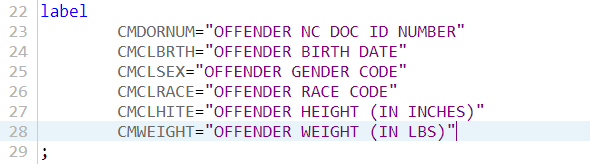
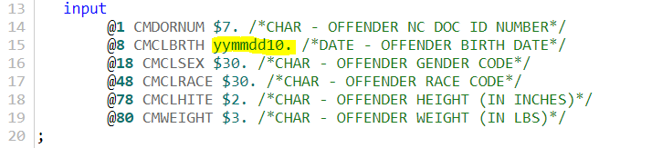

Making INPUT and LABEL Statements with AWK
I am currently working with a database provided by the North Carolina Department of Public Safety that consists of several fixed-width files. Each of these has an associated codebook that gives the internal variable name, a label of the variable, its data type, as well as the start column and the length of the fields for each column. To import the data sets into SAS, I could copy and paste part of that data into my INPUT and LABEL statements, but that gets tedious pretty fast when dealing with dozens of lines. And since I have multiple data sets like that, I didn’t really want to do it that way. In this post I show how a simple command-line script can be written to deal with this problem.
Introducing AWK
Here are the first few lines of one of these files:
CMDORNUM OFFENDER NC DOC ID NUMBER CHAR 1 7
CMCLBRTH OFFENDER BIRTH DATE DATE 8 10
CMCLSEX OFFENDER GENDER CODE CHAR 18 30
CMCLRACE OFFENDER RACE CODE CHAR 48 30
CMCLHITE OFFENDER HEIGHT (IN INCHES) CHAR 78 2
CMWEIGHT OFFENDER WEIGHT (IN LBS) CHAR 80 3
We can see that the data is tabular and separated by multiple spaces. Linux programs often deal with column data and a tool is available for manipulating column-based data on the command-line: AWK, a program that can be used for complex text manipulation from the command-line. Some useful tutorials on AWK in general are available at grymoire.com and at tutorialspoint.
For our purposes, we want to know about the print and printf commands for AWK. To illustrate
how this works, make a simple list of three lines with each term separated by a space:
cat << EOF > list.txt
1 one apple pie
2 two orange cake
3 three banana shake
EOF
To print the whole file, you’d use the print statement: awk '{print}' list.txt. But I could do that with
cat, so what’s the point? Well, what if I only want one of the columns? By default, $n refers to the
nth column in AWK. So to print only the fruits I could write awk '{print $3}' list.txt.
Multiple columns can be printed by listing multiple columns separated by a comma:
awk '{print $2,$3}' list.txt. Note that if you omit the comma the two columns get concatenated into
a single column.
If additional formatting is required, we can use the printf command. So to create a hyphenated
fruit and food-item column, we could use awk '{printf "%s-%s\n", $3, $4}' list.txt. Note that we
have to indicate the end-of line or else everything will be printed into a single line of text.
Now we almost have all of the skills to create the label and input statements in SAS! Let’s create a comma-delimited list for practice:
cat << EOF > list.txt
1,one,apple pie
2,two,orange cake
3,three,banana shake
EOF
The -F flag is used to tell AWK to use a different column separator. So to print the
third column, we’d use awk -F ',' '{print $3}' list.txt.
Making the SAS statements
Now we know everything we need to know about AWK to create code we want. First we note that
our coding file uses multiple spaces as column separators as opposed to single spaces. If
each item was a single word, this wouldn’t be a problem. Unfortunately, our second column
reads “OFFENDER NC DOC ID NUMBER” which would be split into five columns by default. So we
will need to use the column separator flag as -F '[[:space:]][[:space:]]+'.
The LABEL Statement
A SAS label has the
general form
LABEL variable-1=label-1<...variable-n=label-n>;, so for example
label score1="Grade on April 1 Test"
score2="Grade on May 1 Test";
is a valid label statement. In our file the variable names are given in column 1 and the appropriate labels in column 2. So an AWK script to print the appropriate labels can be written like this:
awk -F '[[:space:]][[:space:]]+' '{printf "\t%s=\"%s\"\n", $1, $2}' FILE.DAT
This is what everything looks like given our code:

The INPUT STATEMENT
The INPUT statement can be made in a similar way, it just requires some minor tweaking as INPUT can be a bit more complex to handle a variety of data, see the documentation. In our case we are dealing with a fixed-width record. The fourth column gives the starting column of the data and the fifth gives us the width of that field. The third gives us the data type. The majority of ours are character, so it seems easiest to just have the AWK script print each line as though it were a character together with a SAS comment giving the name and “official” data type. Then the few lines that need adjustment can be manually adjusted. The corresponding code would look like this:
awk -F '[[:space:]][[:space:]]+' '{printf "\t@%s %s $%s. /*%s - %s*/\n",$4, $1, $5, $3, $2}' FILE.DAT
This is what is returned by our code (highlighted part has been manually edited):

I hope you all find this useful and that it will save you some typing!
D. Michael Senter
Research Statistician Developer
My research interests include data analytics and missing data.